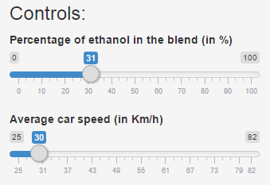

- This Shiny App is a visualization of a fuel consumption prediction model.
- My FIAT Punto can be fueled with either Gasoline or Ethanol. Over 3 years I built a model to understand what is the fuel yield (in Km/L) as a function of the fuel blend. How (and where) car is driven, represented by average speed, is also taken into consideration.
- The prediction model can be visualized by tweaking the controls of the provided app (as seen in image below).
